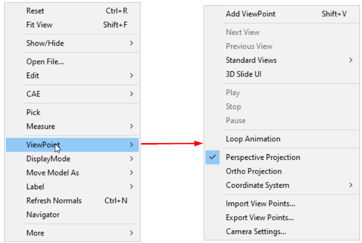
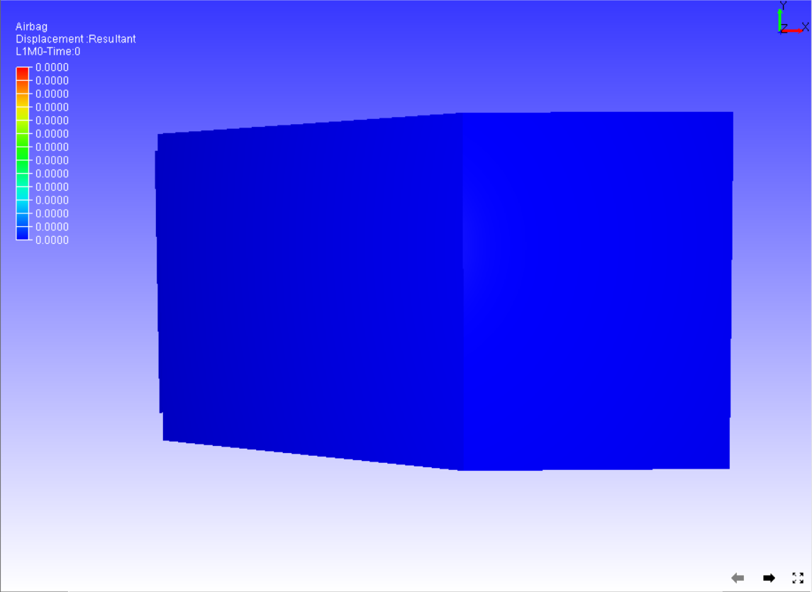
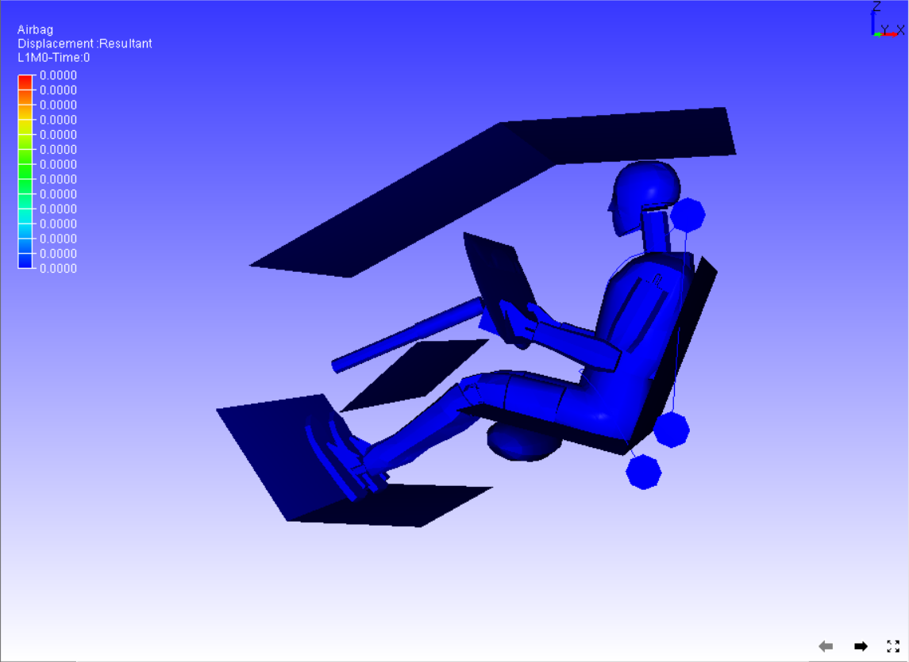
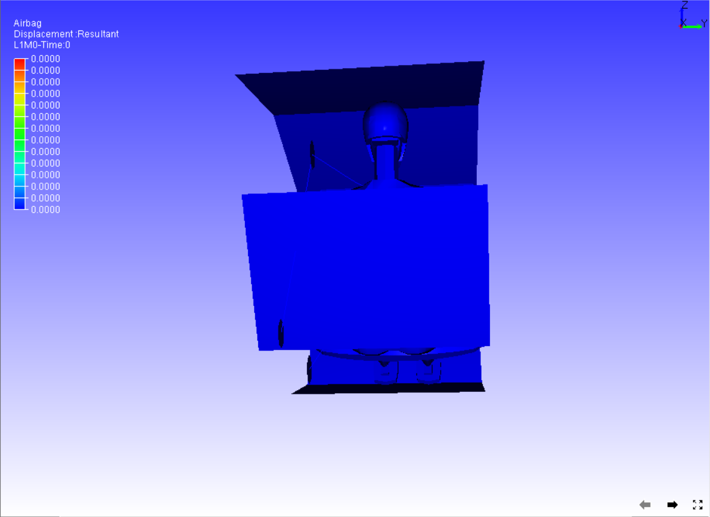
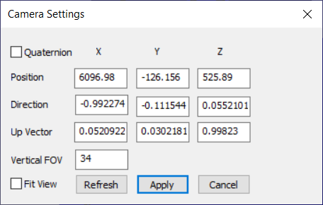

Viewpoint
The Viewpoint option allows users to navigate information through viewpoints and view its states.

The various options available under the Viewpoint sub menu are explained below
| Add ViewPoint | Allows the user to add the current scene as a viewpoint. |
| Next View | Displays the next viewpoint state. |
| Previous View | Displays previous viewpoint state. |
| Standard Views | Allows the user to select a standard view Front, Rear,etc. |
| 3D Slide UI | Shows/Hides 3D slide UI in the bottom right corner of the viewer. |
| Play | Plays Viewpoint Animation. |
| Stop | Stops the animation. |
| Pause | Pauses animation |
| Loop Animation | Animates continuously |
| Perspective Projection | Enables perspective projection |
| Ortho projection | Enables Ortho projection |
| Coordinate System | Allows users to switch between XY, XZ and YZ coordinate systems. |
| Import View Points | Allows users to import viewpoints from either vpt or another cax file. |
| Export View Points | Allows the user to export the viewpoint to vpt or ppt file. |
| Camera Settings… | Allows users to modify camera attributes. |
Coordinate System
| XY | X is the horizontal axis and Y is the vertical axis. Z axis points towards the user in front view. |
| XZ | X is the horizontal axis and Z is the vertical axis. The Y axis points outwards towards the user in front view. |
| YZ | Y is the horizontal axis and Z is the vertical axis. X axis towards the user in front view. |
The coordinate system option helps users to switch between these three systems.
XY System

XZ System

YZ system

Steps to view viewpoints states
- Load any CAx model with CAE information.
- Create and store viewpoint states in the list.
- Select Viewpoint | Next from the context menu to view the next viewpoint state.
- Select Viewpoint | Previous from the context menu to view the previous viewpoint state.
- Select Play to animate the current view path.
- Select Stop to stop animation.
How to import and export viewpoints?
- Open the context menu and click Viewpoint | Import Viewpoints.
- Select and Open any .cax file or .vpt files using the File Open dialog that opens up.
- Click ViewPoint | Export View Points…
- Enter a filename in the Save file dialog that opens and click Save to export viewpoints into a .vpt file.
Camera Settings Panel

The various fields available in the Camera settings panel are explained below
| Quaternion | Toggles to Axis & Angle attributes. |
| Position | Allows users to modify camera position coordinates. |
| Direction/Orientation | Allows users to modify camera direction vector/ orientation axis and angle in case of quaternion option. |
| Up Vector | Allows users to modify the Camera Up vector. |
| Vertical FOV | This refers to the camera ‘Vertical Field of View’ in case of Perspective. |
| Fit View | If a user is not sure about the model in scene after applying the modifications, this option helps to bring the model into scene with same direction vector. |
| Refresh | Click this option to update the current camera attributes to this dialog. |
| Apply | Click to apply all the attributes to the camera. |
Note:
- Up vector should be perpendicular to Direction vector. If not, a projected UP vector defined by the user will be applied.
- A new field, Angle, is displayed if the Quaternion option is selected.
Steps to change camera attributes
Enter camera position using x, y and z coordinates.
Enter Vertical FOV to change the field of view.
To change the camera orientation, there are two ways of modifying. Using Direction and Up vectors.
Provide direction and up vectors in the corresponding fields.
Using Axis and Angle of camera orientation.
Check the Quaternion option.
In the Orientation field, provide an axis of rotation in the first 3 x, y and z fields.
Provide angle of degrees in the last field, Angle.
Click the Apply button.
Notice the change in camera view.
If the user is not sure about the model view, check the Fit View option which helps in viewing the model in the scene with modified direction.
In the case of Fit View, camera position may be different from user defined position.